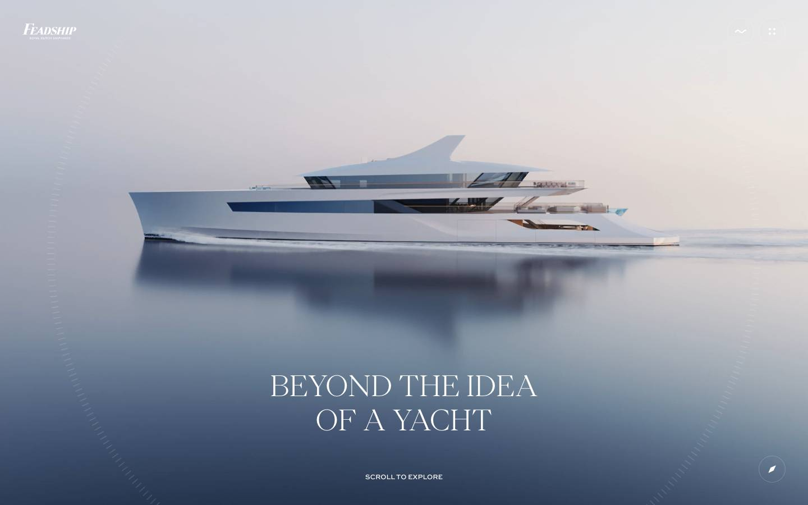
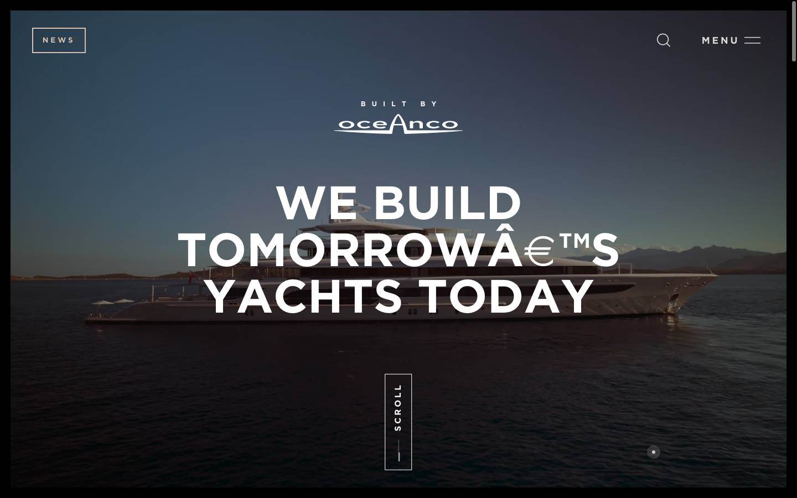
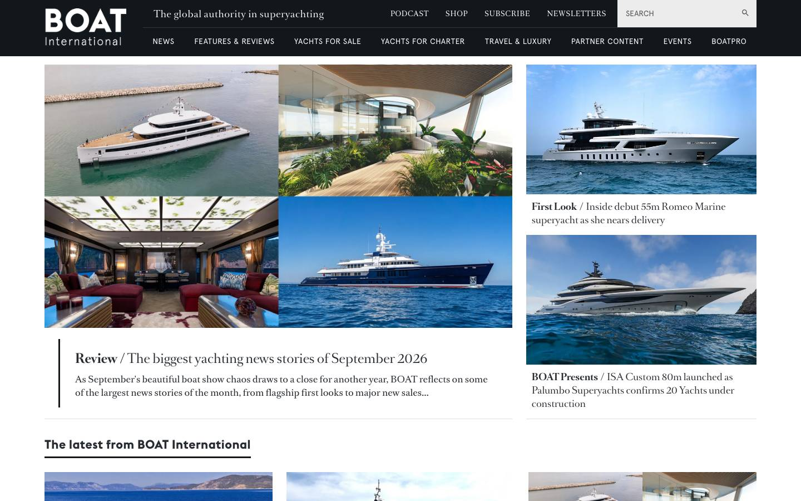
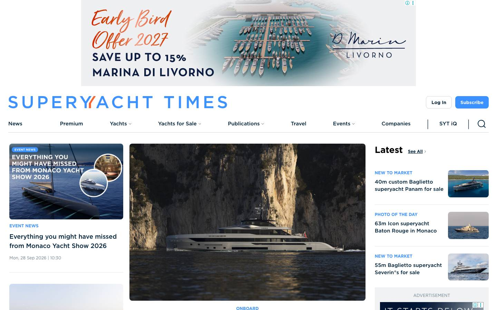
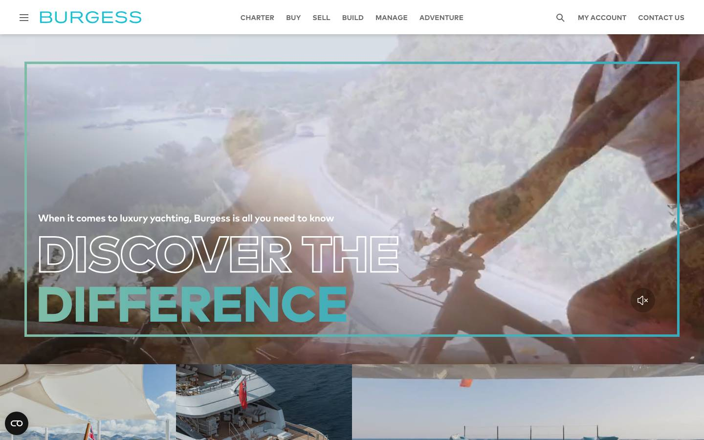
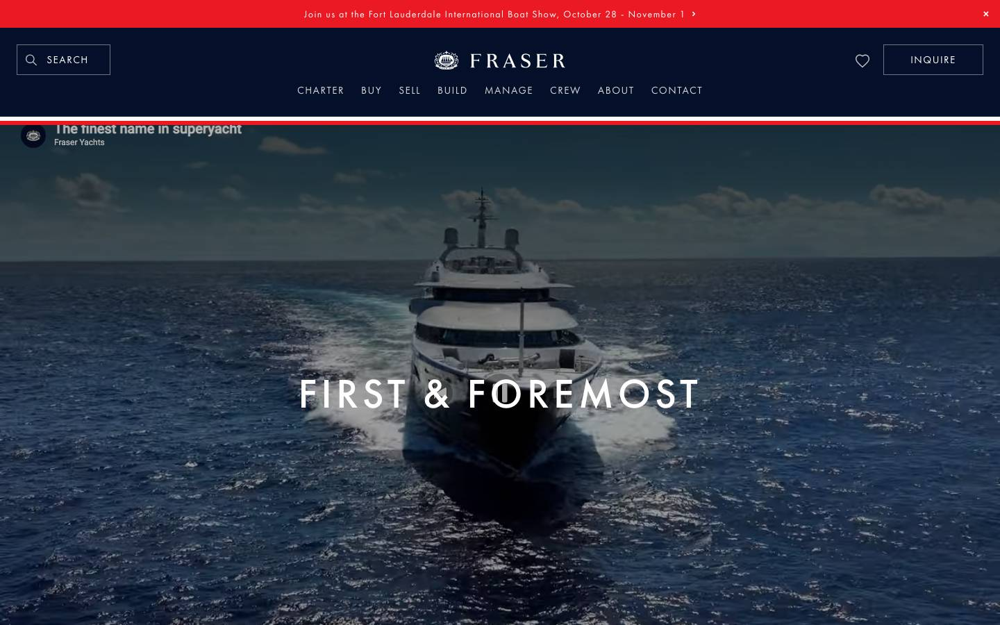
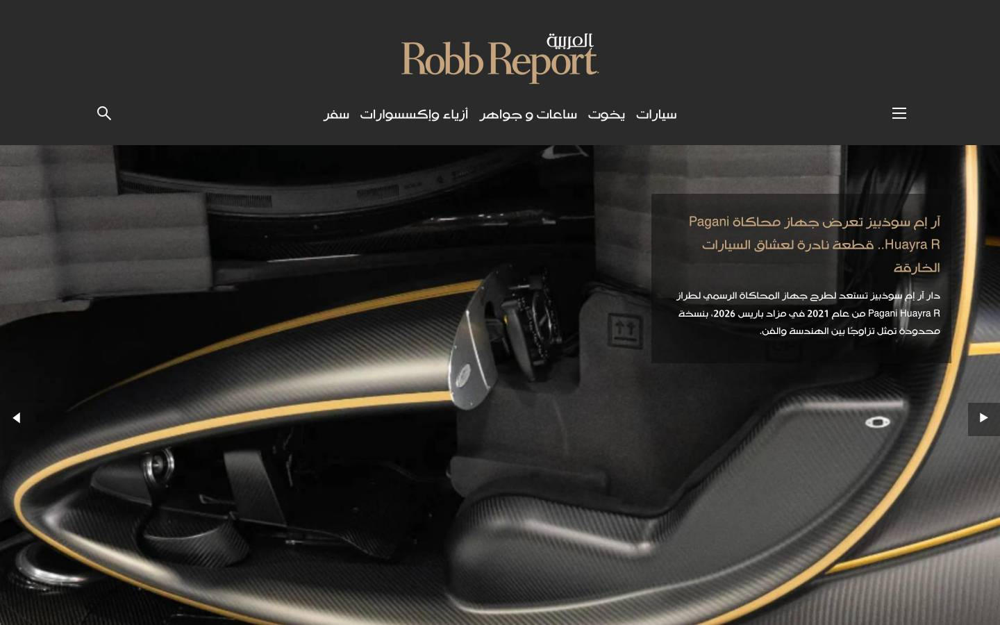
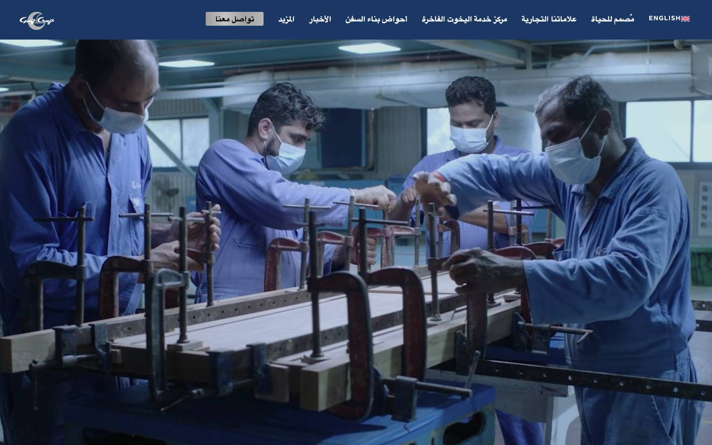
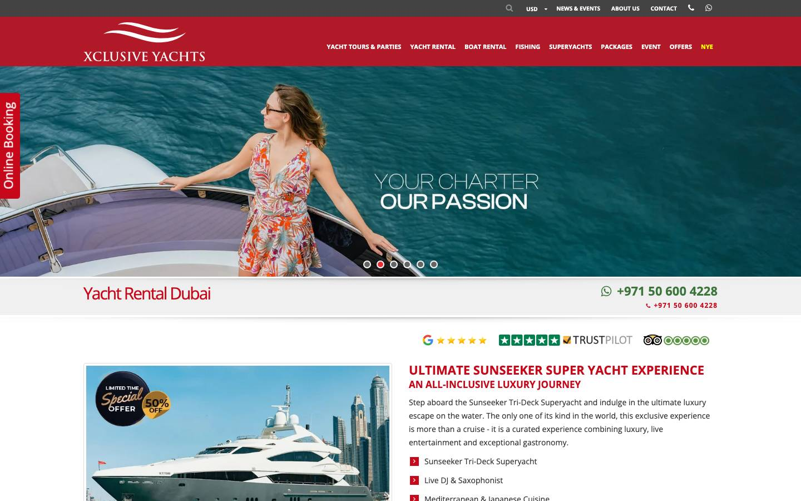

Every page of yachtstylearabia.com, in English and in Arabic: what each page is for, what is on it, what it asks the reader to do and which of the two choices in the proposal carries it. The home page is already built as Prototype Web 1. This plan starts from it, sets out everything that follows, and keeps the larger modules in view as later stages.
What the site is for. Yacht Style Arabia is a new title site on yachtstylearabia.com, on the model of yachtstyle.co, written for Dubai and for Arab readers. It has three jobs: to be read, to be returned to, and to give advertisers and partners a place worth paying for. yachtstyle.co is not changed.
How it is built. One design system in two reading directions, and both choices include English and Arabic with true right to left. Choice A, The Edition, is the title site in ten pages, with lead generation, the newsletter wired into your mailing platform, analytics and a dashboard your team edits from, complete in two weeks and live in three, with a core brand strategy included. Choice B, The Flagship, which we recommend, is a custom site of 19 pages and templates with its own design system, a multi user CMS with roles, CRM and integrations and training at launch, complete in three weeks and live in four, with the full brand strategy and the web identity of the Arabia title included. The proposal prices them at RM15,000 and RM25,000 before SST, each with the editorial CMS in English and Arabic.
What comes later. The yacht and builder directory, marina and show guides, charter and brokerage enquiry paths, the in browser issue reader, the video hub, partner stories and the archive from yachtstyle.co are in neither price. They stay in this plan as the roadmap, tagged Later, and each is quoted before it starts.
People who own, or are about to. They read reviews for the numbers, follow builders and want the marina and the show in one place. Heart Media describes them as an upscale audience: current yacht owners and people interested in acquiring a yacht, affluent, 40 and over.
Readers planning a week on the water in the Arabian Gulf or the Red Sea. They arrive on a destination or charter story and need one clear way to ask.
Builders, dealers, brokers, marinas, shows and luxury brands. They judge the title by its first screen and by how easily they can see the audience and the formats.
Two complete editions. An Arabic reader gets a page designed right to left, not a translated left to right page.
Every page carries one of these and never two of equal weight. No figure exists for Arabia today: the domain is parked, so each measure starts at zero on launch day. OUR RECOMMENDATION Targets are set with you after the first 30 days of data, not guessed now.
| # | The action | Who takes it | Where it completes | The measure of success | Scope |
|---|---|---|---|---|---|
| 1 | Subscribe to the newsletter | Every reader, in English, Arabic or both | The newsletter band that closes every page, and the Newsletter page | Confirmed sign ups a week, split by edition, and the share of visits that end in one | A + B |
| 2 | Read the issue | Owners, buyers and the trade | The header button, the magazine band, the phone action bar | Issue opens a week | A + B |
| 3 | Advertiser enquiry | Builders, dealers, marinas, shows, brands | The Advertise page: the media kit request, then the enquiry form | Media kit requests and enquiries a month that name a company | A + B |
| 4 | Charter enquiry | Charter clients | The charter band and the Charter section, through the Contact routing. On Choice B the Charter page | Enquiries a month with a cruising area and dates filled in | A + B |
A site for a new title needs to know what the title says before it decides how it looks. Both choices include brand strategy at no charge, and Choice B includes the web identity of the Arabia title. The decisions the site depends on are made in week 1, so the design that follows has something to stand on. The documents themselves land with the site.
| The work | What it produces | When | How it feeds the site | Scope |
|---|---|---|---|---|
| Brand Strategy · Core Included in Choice A | The Brand Strategy Document: the brand position and the brand liner, the one line that says where the title sits; the brand voice, character and personality; the brand description; the niche and how the brand communicates | Week 1: the strategy session and the four blocks. Week 2: the Brand Strategy Document | The line under the wordmark, the introduction of every section, the voice of every heading, button and form message in both languages, the About page, the page descriptions a search engine shows | Choice A |
| Brand Strategy · Full Included in Choice B | Everything in Core, then the brand story, the brand pitch, the brand essence (story, vision and mission, tagline, culture and values), the verbal and visual identity direction, and the business strategy layer: model, positioning map, offer and value proposition. Built in working sessions with your leadership. Handed over as the Full Brand Strategy Book, the Brand Strategy Cards, the messaging framework and the business strategy set | Week 1: the workshops, with position, voice and visual direction agreed. Week 2: pitch, story and essence. Week 3: the Book, the Cards, the messaging framework and the business strategy set | Everything Core feeds, plus the pitch on the Advertise page, the story on the About page, and the brief for the identity work | B only |
| Web identity and CI for the Arabia title Included in Choice B | Identity design and design elements, for screen: identity directions to choose from, then the chosen one drawn up as the wordmark of the Arabia title in Latin and in Arabic script, its palette, its type system including Arabic, its design elements and patterns, the site icon and share images, and usage rules for web | Week 1: directions presented on Fri 16 Oct. Week 2: wordmark, palette, type and elements. Week 3: usage rules, the identity guide and the files | It defines the design system of chapter 07. The wordmark replaces the typeset stand in of the draft | B only |
OUR RECOMMENDATION A strategy that never reaches a page is a document. This is where each output lands.
| The decision | Where the site shows it | Scope |
|---|---|---|
| Position and the brand liner | The line with the wordmark on the cover and in the footer. On the draft it reads “Yachting in the Arabian Gulf and the Red Sea” and is marked as a placeholder | A + B |
| Voice, character, personality | Headlines of every band, button wording, form messages, the newsletter promise. Written in Arabic by your editor to the same voice | A + B |
| Brand description | The About page, the page description of the home page, the share card | A + B |
| Niche and communication | The order of the home page bands and which sections lead the navigation | A + B |
| Brand story and essence | The About page and the opening paragraph of the media kit | B only |
| Brand pitch | The Advertise page and the media kit: what an advertiser is told in fifteen seconds | B only |
| Verbal and visual identity | The wordmark, palette, type and design elements of chapter 07 | B only |
The palette, type, spacing and components of Prototype Web 1, set out in chapter 07, are kept and refined against the strategy of week 1. It is built on the existing Yacht Style identity, from the brand files you supply.
The identity work of week 1 defines the wordmark, the palette, the type and the design elements. Chapter 07 then describes the starting point, not the result: the structure and the rules hold, and the look follows the direction you choose.
The instruction was to use the best websites as the reference. These ten come from the 18 sites read in the Peer & Competitor Audit on 1 October 2026. Each card states what the site does best, the one thing we take, what we leave, and where it lands in this plan. Captures are ours, taken that day.
On 5 October 2026 Heart Media named four reference sites of its own: BOAT International, SuperYacht Times and Robb Report, which are among the 18 sites in the audit, and Ocean Magazine, which was read that day and added to it. All four are white, dense news sites that open on the latest stories and carry advertising positions. The draft home page answers that with a second row of news and two designed partner positions.

We takeOne idea per screen. The numbered section labels and the coordinates of Dubai on the cover of the draft come from here.
We leaveThe entry gate before the home page, and the weight: main content took 27.5 seconds in our single phone profile run.
Lands inHome, every section head A + B Open the site

We takeA short fact panel beside the story. Our review carries five or six figures, not a full specification sheet.
We leaveA full screen film as the first thing to load. Ours opens on a still.
Lands inReview A + B Open the site

We takeThe link between story and record: a yacht entered once, its card wherever it is mentioned.
We leavePaid stories in the lead positions of the home page, and a phone page 18,629 pixels long.
Lands inYacht directory Later Open the site

We takeCounted, dated figures on the page: the four archive figures on the draft home page, each with its date.
We leaveAn advertisement above the masthead.
Lands inHome, the Advertise page A + B Open the site

We takeUnits stated on every figure, and a named recipient for every enquiry.
We leaveCompare and saved searches behind an account. No reader accounts are planned.
Lands inReview chips now, the yacht data card later A + B Open the site

We takeGrouped specification on the yacht page, and filters by builder, length and type.
We leaveThe broker roster and company figures. This is a title, not a brokerage.
Lands inYacht directory, yacht page Later Open the site

We takeArabic headlines set large with Latin yacht names inline, on a dark masthead.
We leaveAn Arabic edition with no visible English twin. Ours pairs every page.
Lands inEvery Arabic template A + B Open the site

We takeDirection set at the root, language alternates declared. The leading UAE builder already does this; a title cannot do less.
We leaveThe hero slider.
Lands inBilingual plan, metadata A + B Open the site

We takeA short charter enquiry of four fields, with a click to chat WhatsApp button beside it.
We leaveThe promotional banner and the run of booking blocks.
Lands inCharter band A + B Open the site
We takeTwo editions with their own home pages and editors, joined by a visible switch.
We leaveA separate address for Arabic. This plan keeps both editions on one domain.
Lands inBilingual plan A + B Open the site
Ten pages make Choice A. The same ten and nine further pages make Choice B. 14 more sit in later stages and are in neither price. The navigation is the one in the draft: News, Reviews, Magazine, Leaders, Destinations, Charter, Videos, Events. The sections run on one section template. Every page exists twice, once in each language.
Diagram 01. Site structure. English addresses are shown; the Arabic address is the same path under /ar/. A dashed box is Choice B only. A dotted grey box is a later stage.
OUR RECOMMENDATION English under /en/ and Arabic under /ar/ on yachtstylearabia.com. The paths below are our working pattern and are confirmed at kickoff. Which edition answers at the bare domain is question 1 in chapter 13.
| Page or template | English address | Arabic address | Scope |
|---|---|---|---|
| Home Home | yachtstylearabia.com/en/ | yachtstylearabia.com/ar/ | A + B |
| Cover story with film hero Home | yachtstylearabia.com/en/news/<story>/ | yachtstylearabia.com/ar/news/<story>/ | Later |
| Section page Sections | yachtstylearabia.com/en/<section>/ | yachtstylearabia.com/ar/<section>/ | A + B |
| Article Stories | yachtstylearabia.com/en/news/<story>/ | yachtstylearabia.com/ar/news/<story>/ | A + B |
| Review, with data chips Stories | yachtstylearabia.com/en/reviews/<yacht>/ | yachtstylearabia.com/ar/reviews/<yacht>/ | A + B |
| Interview page Stories | yachtstylearabia.com/en/leaders/<story>/ | yachtstylearabia.com/ar/leaders/<story>/ | B only |
| Video page Stories | yachtstylearabia.com/en/videos/<film>/ | yachtstylearabia.com/ar/videos/<film>/ | B only |
| Magazine and Subscribe Magazine | yachtstylearabia.com/en/magazine/ | yachtstylearabia.com/ar/magazine/ | A + B |
| Newsletter Magazine | yachtstylearabia.com/en/newsletter/ | yachtstylearabia.com/ar/newsletter/ | A + B |
| Issue archive Magazine | yachtstylearabia.com/en/magazine/issues/ | yachtstylearabia.com/ar/magazine/issues/ | Later |
| Issue reader Magazine | yachtstylearabia.com/en/magazine/issue-<number>/ | yachtstylearabia.com/ar/magazine/issue-<number>/ | Later |
| Search results Find | yachtstylearabia.com/en/search/?q= | yachtstylearabia.com/ar/search/?q= | A + B |
| Tag page Find | yachtstylearabia.com/en/tags/<tag>/ | yachtstylearabia.com/ar/tags/<tag>/ | B only |
| Author page Find | yachtstylearabia.com/en/authors/<name>/ | yachtstylearabia.com/ar/authors/<name>/ | B only |
| Charter page Simple pages | yachtstylearabia.com/en/charter/ | yachtstylearabia.com/ar/charter/ | B only |
| Events page Simple pages | yachtstylearabia.com/en/events/ | yachtstylearabia.com/ar/events/ | B only |
| Partners page Simple pages | yachtstylearabia.com/en/partners/ | yachtstylearabia.com/ar/partners/ | B only |
| Advertise Business | yachtstylearabia.com/en/advertising/ | yachtstylearabia.com/ar/advertising/ | A + B |
| Partner story Business | yachtstylearabia.com/en/partners/<story>/ | yachtstylearabia.com/ar/partners/<story>/ | Later |
| About The title | yachtstylearabia.com/en/about/ | yachtstylearabia.com/ar/about/ | A + B |
| Contact The title | yachtstylearabia.com/en/contact/ | yachtstylearabia.com/ar/contact/ | A + B |
| Privacy and cookie text The title | yachtstylearabia.com/en/privacy/ | yachtstylearabia.com/ar/privacy/ | A + B |
| Terms The title | yachtstylearabia.com/en/terms/ | yachtstylearabia.com/ar/terms/ | B only |
| Page not found The title | yachtstylearabia.com/en/ | yachtstylearabia.com/ar/ | B only |
| Yacht directory Yachts and builders | yachtstylearabia.com/en/yachts/ | yachtstylearabia.com/ar/yachts/ | Later |
| Yacht page Yachts and builders | yachtstylearabia.com/en/yachts/<yacht>/ | yachtstylearabia.com/ar/yachts/<yacht>/ | Later |
| Builder page Yachts and builders | yachtstylearabia.com/en/builders/<builder>/ | yachtstylearabia.com/ar/builders/<builder>/ | Later |
| Brokerage enquiry path Yachts and builders | yachtstylearabia.com/en/yachts/<yacht>/#enquire | yachtstylearabia.com/ar/yachts/<yacht>/#enquire | Later |
| Marina index: map and list Marinas and shows | yachtstylearabia.com/en/marinas/ | yachtstylearabia.com/ar/marinas/ | Later |
| Marina guide Marinas and shows | yachtstylearabia.com/en/marinas/<country>/<marina>/ | yachtstylearabia.com/ar/marinas/<country>/<marina>/ | Later |
| Show calendar Marinas and shows | yachtstylearabia.com/en/events/ | yachtstylearabia.com/ar/events/ | Later |
| Show guide Marinas and shows | yachtstylearabia.com/en/events/<show>/ | yachtstylearabia.com/ar/events/<show>/ | Later |
| Charter enquiry path Charter and video | yachtstylearabia.com/en/charter/#enquire | yachtstylearabia.com/ar/charter/#enquire | Later |
| Video hub Charter and video | yachtstylearabia.com/en/videos/ | yachtstylearabia.com/ar/videos/ | Later |
The map above is the fast way in. Below, every page type is written out: the sections in order, the content each needs, the action it asks for, the Arabic and right to left note, and the scope that carries it. Eleven are in both choices, three more are in Choice B, and three are later stages kept as the roadmap. The grey blocks are structure, not design. Dark, sand and pearl blocks follow the grounds of the draft.
A band is briefed by naming its type. The type decides the layout and the content rule, so nothing is redesigned per page and the Arabic edition never breaks a layout.
| Type | What it is for | Layout | Content rule |
|---|---|---|---|
| Hero | Orient a stranger in ten seconds | Full screen, one story | One headline, one sentence, one primary button. No carousel, no advertisement above it |
| Rows | An ordered list where sequence carries meaning | Full width rows with a hairline between | Newest first. Each row has one click target and a date |
| Grid | A set the reader compares | Three across, two on a tablet, one on a phone, or a swipe rail | Every card carries the same fields. A missing field is filled or the card is not published |
| Visual | Show what a paragraph cannot | Contained or full bleed, never taller than the screen | Carries a caption. Film waits until after the first screen |
| Table | Figures a buyer checks line by line | A panel beside the text, or a contained table that scrolls inside itself on a phone | Units always stated. Only sourced figures. Never an image of a table |
| Action | The one thing the page asks for | A band on a distinct ground | One primary button. Anything else in the band is a text link |
| Slot | An advertiser or partner position | A designed position at a fixed size | Always labelled. Never above the masthead |
| Text | The argument between the pictures | A reading measure of about 65 characters | One H1 per page. No paragraph longer than six lines on desktop |
OUR RECOMMENDATION If any of these takes more steps than shown, the structure is wrong, not the copy. This list is the script for testing before launch.
| The task | Who needs it | Where it happens | Steps allowed | Scope |
|---|---|---|---|---|
| Switch this page to Arabic and stay on the same story | Arabic readers | The language switch in the header | 1 | A + B |
| Subscribe to the newsletter in my language | Every reader | The close of any page | 2 | A + B |
| Open the current issue | Owners, buyers, the trade | The header button | 1 | A + B |
| See the length and the builder of a reviewed yacht without opening the review | Buyers | The data chips on every review card | 0 | A + B |
| Reach the person who sells advertising | The trade | Advertise in the top strip, then the form | 2 | A + B |
| Get the media kit | The trade | The Advertise page: a work email in, the kit sent | 2 | A + B |
| Message the title on WhatsApp | Charter clients, the trade | The click to chat button | 1 | A + B |
| Ask about a charter with dates and a place | Charter clients | The charter band | 2 | A + B |
| Find every story on one builder | Buyers | A tag page, from any story on that builder | 1 | B only |
| Watch a film and read its story on one page | Every reader | The video page | 1 | B only |
| Find a marina in one country and see its contact details | Owners, captains | Marina index, then the guide | 2 | Later |
| Look up a yacht by builder and length | Buyers, the trade | Yacht directory filters | 2 | Later |
Each content type is a set of fields. A field marked per language is entered once in English and once in Arabic; every other field is entered once and shared by both editions. Both choices give your team a self editing dashboard. Choice B makes it a multi user CMS with accounts and roles. The platform itself is chosen at kickoff, with the hosting.
| Content type | Fields | Entered per language | Scope |
|---|---|---|---|
| Article | Headline, standfirst, body, section, writer, date, lead image, gallery, pull quote, video link, paired story, share card | Headline, standfirst, body, pull quote, captions, share card | A + B |
| Review, an article with a specification | Everything on an article, plus length, volume, beam, builder, built in, year reviewed, and the unit of each figure | Labels only. Figures are shared | A + B |
| Section | Name, introduction, filter list, menu position | Name, introduction, filter names | A + B |
| Standing page | Title, body, form routing where there is a form | Title, body | A + B |
| The current issue | Number, cover, contents lines, the address where it is read | Contents lines | A + B |
| Leaders piece, an article with a person | Everything on an article, plus the person’s name, role and company, and the label: interview or column | Name as written in each language, role | B only |
| Author | Name, short profile, photograph. The author page is Choice B | Name, profile | A + B |
| Tag | Name, type (yacht, builder, place or subject), one line. The tag page is Choice B | Name, the line | A + B |
| Show, on the Events page | Name, dates, place, the coverage linked to it | Name | B only |
| Advertiser slot | Position, size, creative, link, advertiser. On Choice B your team also schedules each slot | Creative, where the advertiser supplies both | A + B |
| Film, on the video page | Title, video link, poster, the story it belongs to | Title, one line | B only |
| Partner, on the Partners page | Name, logo, type, link | Name | B only |
| Yacht and builder | Name, builder, length, year, type, gallery; builder profile, country, logo | Labels, description, profile | Later |
| Marina and show guide | Name, country, location, map point, contact, facility fields; show dates, venue, organiser | Name, description | Later |
| Issue, for the reader | Number, date, cover, the issue file, reading direction | Contents lines | Later |
| Series, for the video hub | The series each film belongs to | Name | Later |
| Partner story | An article with a sponsored label that cannot be removed | The label, the story | Later |
| Enquiry, in the log | Type, the page it came from, edition, the fields of the form, time received, where it was sent | Not applicable | Later |
| What | What it gives your team | Scope |
|---|---|---|
| A daily rhythm | Built for the one to two articles a day Heart Media plans. One entry fills the home page, its section page and the newsletter, with no layout work | A + B |
| Self editing dashboard | Your team publishes and updates the site without a developer, in either language | A + B |
| Article editor, draft and preview | Fields, not free layout. A story seen as it will appear, in either language, before it is live | A + B |
| Media library | Upload once, with crop presets, alternative text and photographer credit | A + B |
| Sections, tags and menus | Managed by your team | A + B |
| Accounts and roles | Each editor signs in with an account of their own: administrator, editor, contributor. Who drafts, who publishes | B only |
| Scheduled publishing | A story set to publish at a date and time | B only |
| Home page curation | The editors choose the cover story and pin stories in place | B only |
| Advertiser slot management | Your team loads, schedules and replaces the creative in each slot | B only |
| Step | What happens | Who |
|---|---|---|
| 1 · Draft | The story is written in its first language. Fields, not free layout | Your team. On Choice B a contributor or an editor |
| 2 · Pair | The story in the other language is written and linked to its twin. A story may publish in one language first; the switch then lands on that edition’s home page until the twin exists | The editor of that language |
| 3 · Check | Seen as it will appear, in either language, on a phone and on a desktop | The editor |
| 4 · Publish | Live on its edition. On Choice B it can be scheduled for a date and time | The editor |
| 5 · Place | The home page takes the newest stories. On Choice B the editor chooses the cover story and pins stories in place | The editor |
Later Both choices launch with the content you supply for day one. Moving a selected set of stories across from yachtstyle.co is a later stage, quoted before it starts. This is how it would work. yachtstyle.co keeps every original.
| What | On yachtstyle.co on 1 October 2026 | How it would move |
|---|---|---|
| The pool to select from | 3,525 posts: News 2,543, Lifestyle 398, Leaders 275, Reviews 222, Charter 64, Destinations 15 | You choose the set. OUR RECOMMENDATION Start with the Gulf: 224 stories mention Dubai and 180 the Middle East |
| Authors | Every recent post sits under one shared account. The writer is named only in the text | The writer’s name is read from the text and entered as the author |
| Tags | 37 tags, 20 of them empty | Each moved story is filed to tags from the new list |
| Review figures | In the body text, not in fields | Entered into the specification fields, from the review itself |
| Images | Held in the site’s media library | Copied at original size, cropped to the set ratios, with alternative text added |
| Language | English only | Moved in English. An Arabic twin is written by your editor where you want one |
| Duplicates | The original stays live | Each moved story declares which address is the original, so a search engine does not see two copies |
English and Arabic with true right to left are included in both choices. Right to left changes the navigation, every card, every caption and every icon that points. The draft already runs in both directions from one stylesheet. This chapter sets the rules it follows, so each new template inherits them.
| Area | The rule | Status |
|---|---|---|
| Language switch | On every page, in the header: EN and العربية. It lands on the same story in the other language where one exists, otherwise on that edition’s home page. The choice is remembered, and the direction is set before the page paints, so an Arabic reader never sees it flip | Built in the draft |
| Addresses | yachtstylearabia.com/en/ and /ar/, the same path in each. Each page declares its twin | OUR RECOMMENDATION |
| Direction | Set once at the root of the page. Layout is written in start and end, not left and right, so one stylesheet serves both | Built in the draft |
| Arabic type | In the draft: headlines in Noto Naskh Arabic beside Cormorant Garamond, text and interface in IBM Plex Sans Arabic beside Inter. No letter spacing and no capitals in Arabic. Line height 1.8 for text and 1.24 to 1.36 for headlines. On Choice B the identity work chooses the Arabic face with the Latin one | Built in the draft. Approved by your Arabic reader at each review |
| Numerals and dates | Set once for the Arabic edition, in the format you choose. OUR RECOMMENDATION Western numerals (0 to 9) for specifications, so a figure matches the builder’s own sheet, and Arabic month names in dates | Your decision: question 3 |
| Mixed direction | English yacht names, builder names, units and coordinates stay left to right inside an Arabic sentence, isolated so the line does not reorder | Built in the draft |
| Search | Arabic and English content are both searched. Results come back in the reader’s language | Both choices |
| Metadata | Page title, description and share card per language, with language alternates so a search engine serves the right edition | Both choices |
| Interface | Menus, buttons, forms, error messages and the cookie notice in Arabic, from wording you approve | Both choices |
| The issue | An Arabic issue turns its pages in the Arabic direction | Later stage, with the issue reader |
| Task | Who | When |
|---|---|---|
| Arabic stories, headlines and standing page text | Your editors or translators. We do not translate, and no machine translation is published under the masthead | Launch content at kickoff, Mon 12 Oct, the remainder by Wed 14 Oct |
| Arabic interface wording: menus, buttons, forms, errors | We draft from the English. Your Arabic editor corrects and approves | At each review |
| Arabic type: faces, sizes, line heights | We set them. An Arabic reader on your side approves them on a phone and a desktop | At each review |
| Pairing each story to its twin | Your editor, in the dashboard or the CMS | From launch |
| The right to left test of every template | We test in current Chrome, Safari, Edge and Firefox on desktop, tablet and phone | In the last week of each choice |
Everything below is read from the stylesheet of the draft and is a decision, not a mood: a page either follows it or it does not. On Choice A this system is refined against the strategy of week 1 and the existing Yacht Style identity. On Choice B it is the starting point: the identity work of chapter 01 defines the wordmark, the palette, the type and the design elements, and this chapter is rewritten to match the direction you choose. The structure, the spacing rules, the components and the motion rules hold on both.
The palette, in the proportion it is used. OUR RECOMMENDATION Read the bar, not the swatches.
| Rule | Value |
|---|---|
| Spacing scale | 8, 14, 20, 28, 38, 52, 70, 96 pixels. Every margin and padding comes from this list |
| Content width | Up to 1,400 pixels, with a gutter of 20 pixels on a phone, 36 on a tablet and 40 to 64 on a desktop |
| Breakpoints | Phone first. Tablet from 700 pixels, desktop navigation from 1,040, wide from 1,280 |
| Section rhythm | 64 to 128 pixels above and below each band. Grounds alternate dark, pearl and sand so the eye rests |
| Corners | Square. No rounded cards, no drop shadows except under the magazine covers |
| Touch targets | At least 44 pixels. Buttons are 50 pixels tall |
| Header | 64 pixels on a phone, 112 on a desktop |
Designed once, reused everywhere, mirrored once for Arabic. This is what makes the page count buildable in the time. On Choice B they are handed over as a custom design system: a reusable library, so a future page is quick to add.
| # | Component | What it is | Used on | Scope |
|---|---|---|---|---|
| 01 | Header | Top strip, wordmark, eight sections, language switch, one button | Every page | A + B |
| 02 | Cover | Full screen story with data chips, coordinates and cover lines | Home | A + B |
| 03 | Section head | Numbered label, headline, one line, a link | Every band | A + B |
| 04 | Story row | Label, date, headline, small image | News, Leaders, events | A + B |
| 05 | Review card | Numbered, with data chips: length, builder, year | Home, Reviews, related | A + B |
| 06 | Image frame with caption bar | A photograph with its caption on a gradient at the foot | Everywhere | A + B |
| 07 | Stat strip | Counted figures, each with its source line | Home, media kit | A + B |
| 08 | Cover stack | Magazine covers that turn like a page | Home, Magazine | A + B |
| 09 | The chart | A schematic map with pins tied to place cards | Home | A + B |
| 10 | Form | Underlined fields, one button, a plain message | Newsletter, Contact, Advertise | A + B |
| 11 | Film slot | A poster that opens the film in place | Videos, articles | A + B |
| 12 | Advertiser slot | A labelled position at a fixed size | Home, sections, articles | A + B |
| 13 | Specification panel | Figures with units, beside the text | Review | A + B |
| 14 | Phone action bar | Two actions fixed to the foot of the screen | Phone, every page | A + B |
| 15 | Data card, filter bar, reader | The yacht card, directory filters and the issue reader | Directory, guides, magazine | Later |
A band rising 22 pixels into place over about a second, cards following 90 milliseconds apart. A photograph easing 3.5% larger under the pointer. An underline drawing under a link.
Carousels that move on their own, entrance effects on every element, anything a reader must wait for. Cards in a swipe rail are never held back.
Content is visible by default and motion is added on top. Where a reader has switched motion off, every animation and transition stops and the opening screen is skipped.
| # | Moment | What happens | Scope |
|---|---|---|---|
| 1 | The tide through the wordmark | On the first visit of a session the wordmark fills from below in a second and a half, then the sheet lifts. It never holds the page longer than 2.6 seconds | A + B |
| 2 | The cover | One photograph, a slow tide across its foot, a brass horizon line that draws itself, and the coordinates of Dubai: 25°12′N 55°16′E | A + B |
| 3 | The cover stack | The front cover of the magazine turns like a page and goes to the back of the stack. In Arabic it turns the other way | A + B |
| 4 | The chart | A place card and its pin light together, from the Arabian Gulf to the Red Sea | A + B |
| 5 | The moving cover and the film hero | The home page opens on film built from your footage, and cover stories carry a full width film header | Later |
A path is the shortest route from interest to done. Each one is counted as an event from launch day, in an analytics account you own. Lead generation, the mailing platform connection, a WhatsApp button and analytics are in both choices. On Choice B enquiries and advertiser leads are also written into your CRM.
| Action | The path | Where it appears | Event counted | Baseline today | Scope |
|---|---|---|---|---|---|
| 1 · Subscribe to the newsletter | Any page → the closing band → choose English, Arabic or both → email → Subscribe → a confirmation that says what arrives and how often | The close of every page, Newsletter in the top strip, the menu, the phone action bar, the band on section pages, the Newsletter page | Form started, sign up completed, with the edition chosen and the page it came from | None for Arabia. On yachtstyle.co the newsletter form asks for name, email and telephone and makes no promise of what arrives. Ours asks for one field | A + B |
| 2 · Read the issue | Any page → Read the issue → the Magazine and Subscribe page → the link to read it | The header button on every page, the cover, the magazine band, the phone action bar, the issue band on section pages, the In the issue card on an article | Read the issue clicked, with the page it came from. With the later issue reader: issue opened, pages turned, issue finished | None for Arabia. On yachtstyle.co each issue from 59 to 91 has a page turn reader, and the title is on Magzter. We have no reading figures | A + B |
| 3 · Advertiser enquiry | Advertise in the top strip → the Advertise page → request the media kit with a work email → the kit is sent → the enquiry form → a named person replies. On Choice B the lead is also written into your CRM | Advertise in the top strip and the menu, the Partners band, the footer. On Choice B the Partners page | Advertise page viewed, media kit requested, enquiry sent, with company and format of interest. Clicks on each advertiser slot | None for Arabia. On yachtstyle.co the Advertising page is three paragraphs and an email address | A + B |
| 4 · Charter enquiry | A charter or destination story → the charter band → cruising area, when, guests, email → sent through the Contact routing to the inbox you name. On Choice B the Charter page carries the enquiry. A click to chat WhatsApp button sits beside it on both | The charter band on the home page, the Charter section, Charter enquiry in the menu. On Choice B the Charter page | Enquiry started, enquiry sent, with cruising area, and WhatsApp clicks. A path on every charter story with its own log is a later stage | None for Arabia. On yachtstyle.co there are 64 charter stories and no enquiry form | A + B |
The targets are ours and come from the two audits. The yachtstyle.co figures are our own measurements of 1 October 2026 and are set out in full in the Brand & Website Audit. They are the contrast, not a criticism: that site is not being rebuilt.
| Measure | Target for Yacht Style Arabia | yachtstyle.co, 1 October 2026 | Checked |
|---|---|---|---|
| Home page weight, first load | Under 2 MB | 7.7 MB | Staging, before launch |
| Files on first load | Under 40 | 107 style and script files alone: 66 stylesheets, 41 scripts | Staging, before launch |
| Article weight | Under 2 MB | 2.7 MB | Staging, before launch |
| Main content visible | Inside 2.5 seconds on the phone profile used in the competitor audit | Not measured on that profile: the site did not open for our automated browser. The median of the benchmark set was 13.9 seconds | Before launch |
| Layout shift | 0.1 or less: nothing jumps as the page loads | Not measured | Before launch |
| Film and galleries | Load after the first screen. A still stands in on a slow connection | A slider and five embedded frames on the home page | Every template |
| Images | Modern formats, sized to the screen, loaded as the reader scrolls. Two sizes per image at least | 96 distinct images, 6.9 MB of the home page | Every template |
| Header on a phone | 64 pixels | 314 to 337 pixels, about 40% of the screen | Design |
| Text size on a phone | 16 pixels or more | 14 pixels | Design |
| Touch targets | 44 pixels or more | 128 of 263 under 32 pixels | Design |
| Sideways scrolling | None at 390 pixels, in either direction | None | Every template |
On 5 October 2026 Heart Media asked that the site be SEO and GEO friendly. SEO is being found and read by search engines. GEO is being read, quoted and linked by answer tools such as ChatGPT, Gemini and Perplexity. The table is what the build does for both. The draft pages already carry the address of each page, its twin in the other language and structured data.
| Item | Target | yachtstyle.co | Scope |
|---|---|---|---|
| Main heading | One H1 on every page | None on the pages tested | A + B |
| Page title and description | Written per page, per language | Home title reads “Home” | A + B |
| Language alternates | Every page declares its twin | None: one language | A + B |
| Article data | Headline, dates, section and the writer by name | Present. The author field holds an account name | A + B |
| Sitemap and Search Console | One XML sitemap, the domain verified, the sitemap submitted | Present, with a second empty one listed first | A + B |
| Share cards | The right image and title, in either language | Present | A + B |
| Tag pages | A page per yacht, builder, place and subject | None | B only |
| Data for yachts, marinas, shows and films | Structured data beyond articles | Not applicable | Later |
| Answer tools (GEO) | Key facts in plain sentences at the top of every story, structured data on every page, and an llms.txt file at the root that tells answer tools what the title is and where its sections live | Not tested | A + B |
| Item | Target | Scope |
|---|---|---|
| Contrast | OUR RECOMMENDATION WCAG 2.2 level AA on every text surface, including brass on navy and the small labels | A + B |
| Keyboard | Every link, menu, form and filter reachable, with a visible focus ring. A skip link on every page | A + B |
| Alternative text | A field at upload. On yachtstyle.co 194 of 235 home page images have none | A + B |
| Language and direction | Declared on every page, and on any phrase in the other language | A + B |
| Motion | Switched off where the reader asks. No loss of content | A + B |
| Forms | A label on every field, errors in words, in the reader’s language | A + B |
| Without scripts | Text and pictures render first. Motion and filters are added to a page that already reads | A + B |
On yachtstyle.co a builder’s banner leads every screen, which proves the demand. On the Arabia site every position is designed into the template at a fixed size, labelled, and never placed above the masthead.
| Surface | Where | How it is labelled | Managed by | Scope |
|---|---|---|---|---|
| Partners band | Home page, band 09: six positions by type | Each marked as a partner | Your team, from the dashboard | A + B |
| Advertiser slots | Fixed slots built into the home, section and article pages, sized to the formats you sell | Partner or Advertisement, in both languages | Your team, from the dashboard | A + B |
| Advertise page | Top strip, menu and footer | Not applicable | The media kit request and the enquiry reach the inbox you name | A + B |
| Slot management | In the CMS: load, schedule and replace the creative in each slot | Not public | Your team, in the CMS | B only |
| Partners page | A simple page of partner and advertiser logos with their links | Each marked as a partner | Your team, in the CMS | B only |
| Partner story | Its own template, listed with a label on every card | Sponsored, at the top of the story and on its card. The label cannot be removed | Later stage | Later |
| Partner strip on guides | Each marina and show guide | Partner | Later stage | Later |
On yachtstyle.co the media kit is an email address. Here the Advertise page sets out the audience and the formats, and sends the media kit in return for a work email. The order below is ours.
| # | Section | What it holds | From |
|---|---|---|---|
| 1 | What Yacht Style Arabia is | One paragraph, from the brand strategy: the title, the region, the two languages, the group | The strategy work |
| 2 | Audience | One figure, dated and sourced. Two circulation figures are in public today, so one has to be chosen | You: question 9 |
| 3 | Formats | Each format you sell, shown in its position on a page. The draft lists four as placeholders: sponsored review, issue page, newsletter placement, show partnership | You |
| 4 | Specifications | Sizes, file types, deadlines | You |
| 5 | The calendar | The shows and the issue dates of the season | You |
| 6 | Request the media kit | A work email in, your media kit file sent in return. The request is counted | You |
| 7 | The contact | A named person, and a form that reaches them. On Choice B the lead is also written into your CRM | You |
Dates assume a kickoff on Mon 12 Oct 2026 and move day for day with it. Strategy and identity inputs are due at kickoff, because that work fills week 1. Anything missing at kickoff is the first thing we settle together. A box is ticked when the item is received.
| What | Why | By | Scope | |
|---|---|---|---|---|
| Received on Mon 5 Oct 2026 | ||||
| The audience | Upscale: current yacht owners and people interested in acquiring a yacht. Affluent, 40 and over | Chapter 00 | A + B | |
| Search | The site must be SEO and GEO friendly | Chapter 09.1 | A + B | |
| The publishing rhythm | One to two articles a day | Chapter 05.2 | A + B | |
| Reference sites | boatinternational.com, oceanmagazine.com.au, superyachttimes.com and robbreport.com | Chapter 02 | A + B | |
| Before kickoff | ||||
| The approver | One named person who gives feedback and signs off. One voice keeps a short build short | Fri 9 Oct | A + B | |
| Choice A or Choice B | It sets the sitemap and the schedule | Fri 9 Oct | A + B | |
| At kickoff: strategy and identity | ||||
| The strategy intake, returned | The strategy is built from your answers and it comes before the design | Mon 12 Oct | A + B | |
| Your leadership in the strategy workshops | The full strategy is built with you, not handed to you | Week 1 | B only | |
| What exists already | Any positioning, audience notes, and the lines the title uses today | Mon 12 Oct | A + B | |
| Logo artwork and brand files | The Yacht Style artwork, typefaces and any guideline. Choice A is built on the existing identity; Choice B extends it for the Arabia title. Heart Media’s answer on 5 Oct was to see the current Yacht Style website, so until artwork arrives the work is drawn from yachtstyle.co | Mon 12 Oct | A + B | |
| Identity inputs | Any Arabia masthead work already done, what must be kept from the Yacht Style identity, and references you admire | Mon 12 Oct | B only | |
| At kickoff: the site | ||||
| Domain and hosting access | Access to the record of yachtstylearabia.com, and the hosting decision. Both stay in your name | Mon 12 Oct | A + B | |
| Launch content, English and approved Arabic | Stories, the page text, film links. The site is built with real content | Mon 12 Oct, the remainder by Wed 14 Oct | A + B | |
| Press resolution imagery and film | Photographs at press resolution with credits, and film links. We grade, crop and compress them for the page | Mon 12 Oct | A + B | |
| The current issue | Cover, number, contents lines, and the link to read it | Mon 12 Oct | A + B | |
| Advertiser formats, the media kit and the partner list | The formats you sell and their sizes, the media kit file, one audience figure with its source and month, and partner names and logos | Mon 12 Oct | A + B | |
| The Gulf regions | The regions and countries for the Marinas section and the chart | Mon 12 Oct | A + B | |
| During the build | ||||
| An Arabic editor | Someone who reads Arabic daily, at each review, for the type and the wording | Each review | A + B | |
| Analytics access and the connections | The analytics account, the mailing platform, the inboxes for each kind of enquiry and the WhatsApp number. Each is wired and tested before launch | Mon 19 Oct | A + B | |
| Privacy and cookie text | In both languages. On Choice B also the terms | Mon 19 Oct | A + B | |
| The identity direction | One direction chosen from those presented on Fri 16 Oct | Mon 19 Oct | B only | |
| The CRM | Access to the pipeline tool that enquiries are written into | Mon 19 Oct | B only | |
| Consolidated feedback on each round | One list, from the approver. Late feedback moves every date day for day | Within two working days | A + B | |
| Later stages: needed only when a stage is quoted | ||||
| Issue PDFs | The issue files, covers and dates for the reader and the archive | When quoted | Later | |
| Directory and guide data | Yacht and builder data, the marina and show list | When quoted | Later | |
| The archive selection | The stories to move from yachtstyle.co | When quoted | Later | |
The two choices are two different schedules from the same kickoff, not two stages of one. Choice A takes three weeks: the site is complete in two, and the third week is for testing and your amendments. Choice B takes four weeks: the site is complete in three, and the fourth week is for your amendments and fixes. Nothing goes live until that last week is done. Kickoff is assumed on Mon 12 Oct 2026. That date is our assumption, and every date below moves day for day with your acceptance.
| Choice | Review | Day | What is in front of you | What we need back |
|---|---|---|---|---|
| Choice A | 1 | Fri 16 Oct 2026 | The page designs: ten pages, both reading directions | Approval, so the pages are built in week 2 |
| Choice A | 2 | Fri 23 Oct 2026 | The complete site: ten pages, both languages | One consolidated list by Tue 27 Oct |
| Choice A | 3 | Fri 30 Oct 2026 | The Edition, tested and amended, ready to go live | Go live approval |
| Choice B | 1 | Fri 16 Oct 2026 | Identity directions, with the sitemap and wireframes already approved in the week | One direction chosen by Mon 19 Oct |
| Choice B | 2 | Fri 23 Oct 2026 | Every page designed, with the finished identity | Approval, so the pages are built in week 3 |
| Choice B | 3 | Fri 30 Oct 2026 | The complete site: every page, both languages | One consolidated list by Tue 3 Nov |
| Choice B | 4 | Fri 6 Nov 2026 | The Flagship, amended and fixed, ready to go live | Go live approval and handover acceptance |
None of these can be read from outside. Each one changes a page, a field or a date. Where we have a view it is marked as ours.
| # | Question | What it changes | Our view |
|---|---|---|---|
| 1 | Is Arabic or English the lead language, and which edition answers at the bare domain? | The home address, the default for a first visit, the order of the switch | OUR RECOMMENDATION Arabic at the bare domain for readers in the region, English one click away. The competitor audit recommends Arabic first |
| 2 | Who is the Arabic editor, and where do they sit? | The draft review and every Arabic word on the site | A named person before kickoff |
| 3 | Which numerals and date format for the Arabic edition? | Every date and figure in Arabic | OUR RECOMMENDATION Western numerals for specifications |
| 4 | Which platform, hosting, CRM and advertising server does ITP expect its titles to use? | The technical decisions of week 1 | Asked before kickoff, so the build sits inside the group’s systems |
| 5 | Which Gulf regions and countries, in what order? | The Marinas filter and the chart | The draft shows the UAE, Egypt, Qatar, Saudi Arabia and Oman as a starting point |
| 6 | Who joins the strategy work in week 1, and who has the last word on the position and the line? | The brand strategy, and every heading that follows from it | The same approver as the site, with the editor in the room |
| 7 | What must the Arabia identity keep from Yacht Style: the red, the masthead lettering, both? | The identity directions on Choice B | OUR RECOMMENDATION Keep the masthead recognisable and give it an Arabic companion, as the audit suggests |
| 8 | Which WhatsApp number takes the click to chat enquiries, and who answers it? | The button on the charter band and the Contact page | It is how Dubai operators take enquiries. It needs a number that is staffed |
| 9 | Which audience figure may be published, from which source and month? | The Advertise page and the media kit | One figure, dated, the same on every group site |
| 10 | Is there an Arabia issue of the magazine, and when? | The magazine band and Read the issue | Until there is, the current Yacht Style issue stands in, labelled |
| 11 | Which mailing platform, how often does the newsletter go, and is there one per language? | The sign up form and its promise | The form states the frequency. Without one it promises nothing |
| 12 | What is the wording of the partner label, in both languages? | Every partner position | Agreed with your sales team before launch |
| 13 | Is the launch tied to a show? | The date, and what the home page leads with | The Dubai International Boat Show opens on Wed 25 Nov 2026 |
| 14 | Which later stage matters most to you: the directory, the marina and show guides, the issue reader, or the enquiry paths? | What is quoted first after launch | OUR RECOMMENDATION The marina and show guides: no title in the benchmark set offers them for the Gulf in both languages |